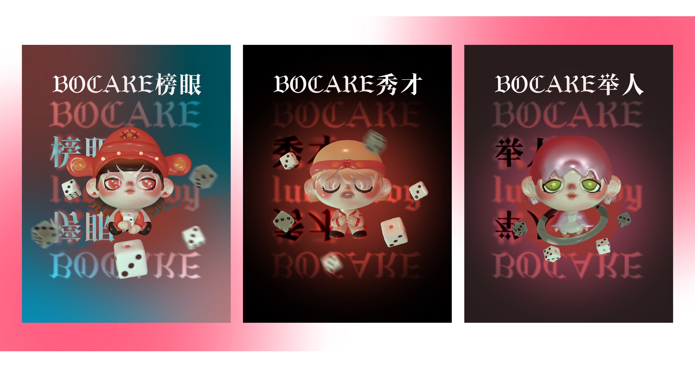
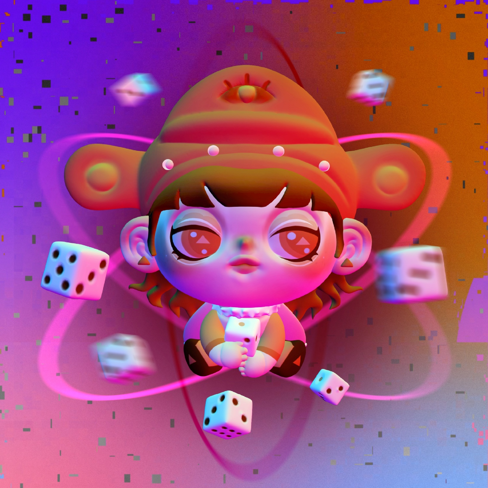

BOCAKE

BOCAKE is a concept IP series inspired by the traditional Chinese game "Bo Bing".
The series includes six characters — Zhuangyuan, Bangyan, Tanhua, Jinshi, Juren, and Xiucai — based on ancient scholar titles.
Each design uses 3D modeling to bring these figures to life with a fun and modern twist.
Blending tradition with bold style, the visuals feature a vibrant and colorful black aesthetic.

The Mid-Autumn Bo Bing tradition began in Xiamen and spread across southern Fujian over the centuries.
It was created by Zheng Chenggong to comfort his troops during the festival while stationed on Gulangyu Island.
With the moon overhead, friends and family gather around the table, rolling dice and winning scholar titles.
In laughter and play, people celebrate reunion, luck, and the warmth of tradition.
The design drafts begin with hand-drawn sketches and progress into stylized 3D-ready concepts.
Each figure maintains a distinct personality while sharing a unified visual language rooted in historical costume and cultural symbolism.
These drafts lay the foundation for a vibrant, collectible 3D IP series with strong ties to Chinese folklore and festive tradition.
The BOCAKE NFT series sold out immediately upon launch, reflecting overwhelming demand.
Collectors quickly seized the opportunity to own these culturally inspired digital pieces.
Now fully sold out on NFT platforms, the series stands as a rare and valuable collection.
Sincere thanks to Professor Qi Yuechun for his invaluable guidance on the project.